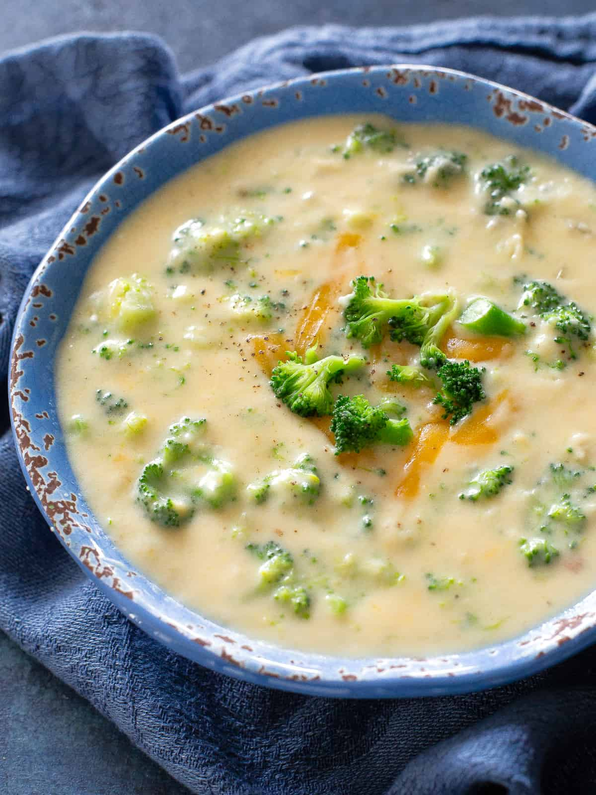

Broccoli and Cheese Soup

How to make this delicious dish!
This is an easy, yet long dish to make. Sometimes you may feel like it's too difficult...
but it really is easy, and if you can master it, it's delicious!
Ingrediants
- Broccoli
- Cheddar Cheese
- Vegetable Stock
Cooking Instructions
- Add vegetable broth to pot and bring to boil
- Once at a boil, add the cut broccoli stalks to the pot and let them cook
- Shred the cheddar cheese and add it to the point after bringint it to a boil to ensure it's creaminess
After the cheese has melted, serve in warmed bowls with piece of french bread